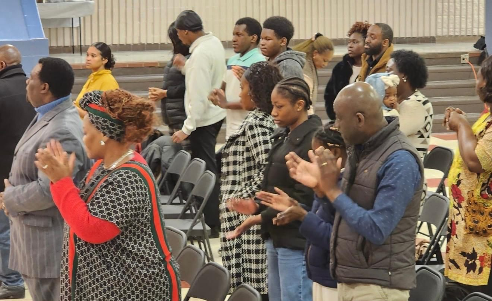

Plan a visit
We saved you a seat.
Whether it’s your first time in church or you’re looking for a new church home, you’re welcome here.
When we meet
Service times.
First time?
What to expect.

What is a Sunday service like?
Our Sunday service runs about two hours, with heartfelt praise and worship, prayer, and a message from the Bible. You’ll be greeted at the door and helped to find a seat.
What should I wear?
Come as you are. You’ll see everything from Sunday best to casual. What matters is that you’re here.
Is there something for my kids?
Yes! Children are an important part of our church family. Ask a greeter about our Children’s Ministry when you arrive.
I’m not from a Baptist church. Is that okay?
Absolutely. We are blessed with people of all ages from a variety of denominational backgrounds, and there’s always room for one more.
Can someone pray with me?
Of course. Speak with us after any service, or call us and we’ll be glad to pray with you.
Coming up